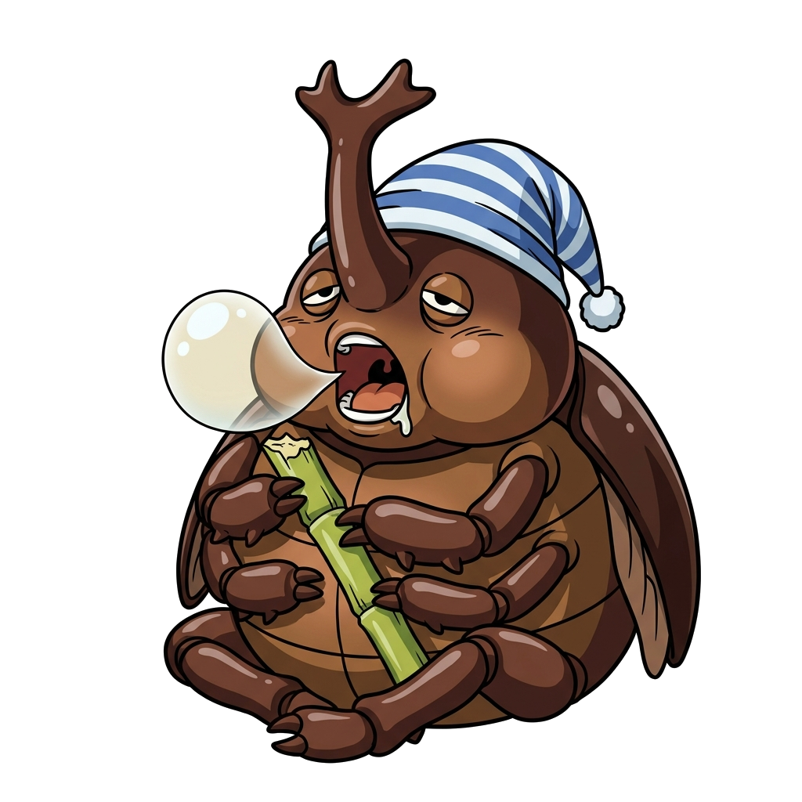

🦋 【出征整備】請輸入勇者姓名、挑選守護角色並選擇要挑戰的主題測驗：
🤖 AI Agent 批次生成專用指令（含 20 個固定檔名與精確尺寸要求）：
~ 乘著春風的生態冒險奇蹟 ~

此為管理者專屬控制台，請輸入管理密碼以解鎖（預設密碼：admin）：
Game-data/student_records.json。
Game-data/
Game-data/config.json 並自動保留豐富繁體中文備註！
~ 蝶翼乘風飛躍三千哩・生命延續永恆傳奇 ~
恭喜完成台灣紫斑蝶生態大遷徙！檢視你的冒險成就並鞏固生態智慧！